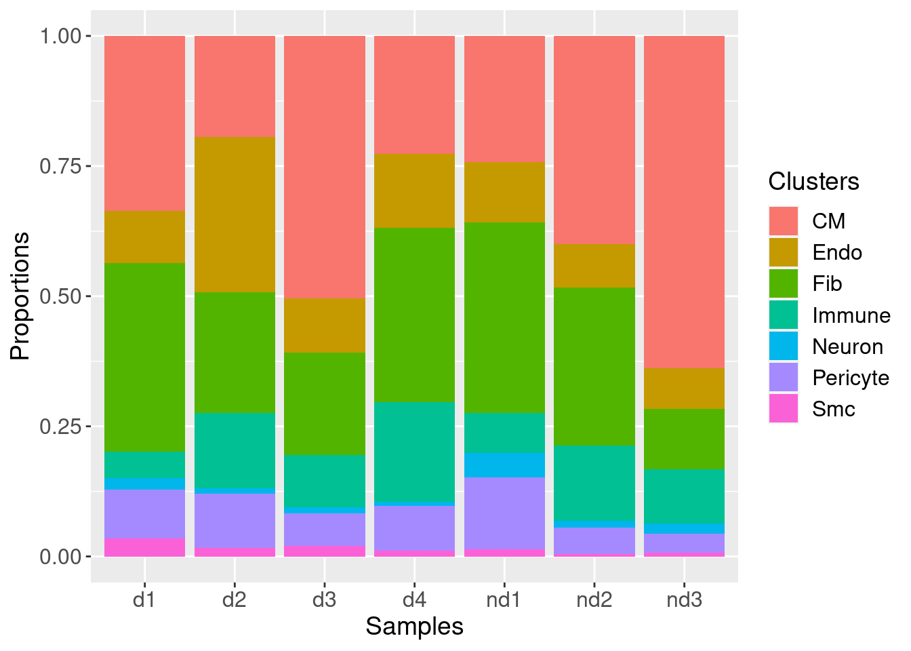

Code used to generate the figure presented in the paper.
Neda R. Mehdiabadi
24/02/2022
Last updated: 2022-04-07
Checks: 7 0
Knit directory:
Fetal-Gene-Program-snRNAseq/
This reproducible R Markdown analysis was created with workflowr (version 1.7.0). The Checks tab describes the reproducibility checks that were applied when the results were created. The Past versions tab lists the development history.
Great! Since the R Markdown file has been committed to the Git repository, you know the exact version of the code that produced these results.
Great job! The global environment was empty. Objects defined in the global environment can affect the analysis in your R Markdown file in unknown ways. For reproduciblity it’s best to always run the code in an empty environment.
The command set.seed(20220406) was run prior to running
the code in the R Markdown file. Setting a seed ensures that any results
that rely on randomness, e.g. subsampling or permutations, are
reproducible.
Great job! Recording the operating system, R version, and package versions is critical for reproducibility.
Nice! There were no cached chunks for this analysis, so you can be confident that you successfully produced the results during this run.
Great job! Using relative paths to the files within your workflowr project makes it easier to run your code on other machines.
Great! You are using Git for version control. Tracking code development and connecting the code version to the results is critical for reproducibility.
The results in this page were generated with repository version e953def. See the Past versions tab to see a history of the changes made to the R Markdown and HTML files.
Note that you need to be careful to ensure that all relevant files for
the analysis have been committed to Git prior to generating the results
(you can use wflow_publish or
wflow_git_commit). workflowr only checks the R Markdown
file, but you know if there are other scripts or data files that it
depends on. Below is the status of the Git repository when the results
were generated:
working directory clean
Note that any generated files, e.g. HTML, png, CSS, etc., are not included in this status report because it is ok for generated content to have uncommitted changes.
These are the previous versions of the repository in which changes were
made to the R Markdown (analysis/07-Figure.Rmd) and HTML
(docs/07-Figure.html) files. If you’ve configured a remote
Git repository (see ?wflow_git_remote), click on the
hyperlinks in the table below to view the files as they were in that
past version.
| File | Version | Author | Date | Message |
|---|---|---|---|---|
| html | 457dc98 | neda-mehdiabadi | 2022-04-07 | Build site. |
| Rmd | 78db7d6 | neda-mehdiabadi | 2022-04-07 | wflow_publish(c("analysis/Rmd", "data/txt", "data/README.md", |
Load libraries and functions
library(edgeR)Loading required package: limmalibrary(RColorBrewer)
library(org.Hs.eg.db)Loading required package: AnnotationDbiLoading required package: stats4Loading required package: BiocGenerics
Attaching package: 'BiocGenerics'The following object is masked from 'package:limma':
plotMAThe following objects are masked from 'package:stats':
IQR, mad, sd, var, xtabsThe following objects are masked from 'package:base':
anyDuplicated, append, as.data.frame, basename, cbind, colnames,
dirname, do.call, duplicated, eval, evalq, Filter, Find, get, grep,
grepl, intersect, is.unsorted, lapply, Map, mapply, match, mget,
order, paste, pmax, pmax.int, pmin, pmin.int, Position, rank,
rbind, Reduce, rownames, sapply, setdiff, sort, table, tapply,
union, unique, unsplit, which.max, which.minLoading required package: BiobaseWelcome to Bioconductor
Vignettes contain introductory material; view with
'browseVignettes()'. To cite Bioconductor, see
'citation("Biobase")', and for packages 'citation("pkgname")'.Loading required package: IRangesLoading required package: S4Vectors
Attaching package: 'S4Vectors'The following objects are masked from 'package:base':
expand.grid, I, unnamelibrary(limma)
library(Seurat)Attaching SeuratObjectlibrary(cowplot)
library(DelayedArray)Loading required package: Matrix
Attaching package: 'Matrix'The following object is masked from 'package:S4Vectors':
expandLoading required package: MatrixGenericsLoading required package: matrixStats
Attaching package: 'matrixStats'The following objects are masked from 'package:Biobase':
anyMissing, rowMedians
Attaching package: 'MatrixGenerics'The following objects are masked from 'package:matrixStats':
colAlls, colAnyNAs, colAnys, colAvgsPerRowSet, colCollapse,
colCounts, colCummaxs, colCummins, colCumprods, colCumsums,
colDiffs, colIQRDiffs, colIQRs, colLogSumExps, colMadDiffs,
colMads, colMaxs, colMeans2, colMedians, colMins, colOrderStats,
colProds, colQuantiles, colRanges, colRanks, colSdDiffs, colSds,
colSums2, colTabulates, colVarDiffs, colVars, colWeightedMads,
colWeightedMeans, colWeightedMedians, colWeightedSds,
colWeightedVars, rowAlls, rowAnyNAs, rowAnys, rowAvgsPerColSet,
rowCollapse, rowCounts, rowCummaxs, rowCummins, rowCumprods,
rowCumsums, rowDiffs, rowIQRDiffs, rowIQRs, rowLogSumExps,
rowMadDiffs, rowMads, rowMaxs, rowMeans2, rowMedians, rowMins,
rowOrderStats, rowProds, rowQuantiles, rowRanges, rowRanks,
rowSdDiffs, rowSds, rowSums2, rowTabulates, rowVarDiffs, rowVars,
rowWeightedMads, rowWeightedMeans, rowWeightedMedians,
rowWeightedSds, rowWeightedVarsThe following object is masked from 'package:Biobase':
rowMedians
Attaching package: 'DelayedArray'The following objects are masked from 'package:base':
aperm, apply, rowsum, scale, sweeplibrary(scran)Loading required package: SingleCellExperimentLoading required package: SummarizedExperimentLoading required package: GenomicRangesLoading required package: GenomeInfoDb
Attaching package: 'SummarizedExperiment'The following object is masked from 'package:SeuratObject':
AssaysThe following object is masked from 'package:Seurat':
Assays
Attaching package: 'SingleCellExperiment'The following object is masked from 'package:edgeR':
cpmLoading required package: scuttlelibrary(NMF)Loading required package: pkgmakerLoading required package: registry
Attaching package: 'pkgmaker'The following object is masked from 'package:S4Vectors':
new2Loading required package: rngtoolsLoading required package: clusterNMF - BioConductor layer [OK] | Shared memory capabilities [NO: synchronicity] | Cores 31/32 To enable shared memory capabilities, try: install.extras('
NMF
')
Attaching package: 'NMF'The following object is masked from 'package:DelayedArray':
seedThe following object is masked from 'package:S4Vectors':
nrunlibrary(workflowr)
library(ggplot2)
library(clustree)Loading required package: ggraphlibrary(dplyr)
Attaching package: 'dplyr'The following objects are masked from 'package:GenomicRanges':
intersect, setdiff, unionThe following object is masked from 'package:GenomeInfoDb':
intersectThe following object is masked from 'package:matrixStats':
countThe following object is masked from 'package:AnnotationDbi':
selectThe following objects are masked from 'package:IRanges':
collapse, desc, intersect, setdiff, slice, unionThe following objects are masked from 'package:S4Vectors':
first, intersect, rename, setdiff, setequal, unionThe following object is masked from 'package:Biobase':
combineThe following objects are masked from 'package:BiocGenerics':
combine, intersect, setdiff, unionThe following objects are masked from 'package:stats':
filter, lagThe following objects are masked from 'package:base':
intersect, setdiff, setequal, unionlibrary(speckle)source("code/normCounts.R")
source("code/findModes.R")
source("code/ggplotColors.R")Read in the Fetal, ND and DCM data
fetal.integrated <- readRDS(file="/group/card2/Neda/MCRI_LAB/single_cell_nuclei_rnaseq/Porello-heart-snRNAseq/output/RDataObjects/fetal-int.Rds")
load(file="/group/card2/Neda/MCRI_LAB/single_cell_nuclei_rnaseq/Porello-heart-snRNAseq/output/RDataObjects/fetalObjs.Rdata")
##note: nd.integrated is also an integrated form of young heart samples. young.integrated has already been published in Sim et al., Circ. 2021, PMID: 33682422.
nd.integrated <- readRDS(file="/group/card2/Neda/MCRI_LAB/single_cell_nuclei_rnaseq/Porello-heart-snRNAseq/output/RDataObjects/nd-int.Rds")
load(file="/group/card2/Neda/MCRI_LAB/single_cell_nuclei_rnaseq/Porello-heart-snRNAseq/output/RDataObjects/ndObjs.Rdata")
dcm.integrated <- readRDS(file="/group/card2/Neda/MCRI_LAB/single_cell_nuclei_rnaseq/Porello-heart-snRNAseq/output/RDataObjects/dcm-int.Rds")
load(file="/group/card2/Neda/MCRI_LAB/single_cell_nuclei_rnaseq/Porello-heart-snRNAseq/output/RDataObjects/dcmObjs.Rdata")
# Load unfiltered counts matrix for every sample (object all)
load("/group/card2/Neda/MCRI_LAB/single_cell_nuclei_rnaseq/Porello-heart-snRNAseq/output/RDataObjects/all-counts.Rdata")Set default clustering resolution
# Default 0.3
Idents(fetal.integrated) <- fetal.integrated$Celltype
DimPlot(fetal.integrated, reduction = "tsne",label=TRUE,label.size = 3)+NoLegend()
table(fetal.integrated$biorep, fetal.integrated$Celltype)
Idents(fetal.integrated) <- fetal.integrated$integrated_snn_res.0.3
# Default 0.3
##note: nd.integrated is also an integrated form of young heart samples. young.integrated has already been published in Sim et al., Circ. 2021, PMID: 33682422.
Idents(nd.integrated) <- nd.integrated$Celltype
DimPlot(nd.integrated, reduction = "tsne",label=TRUE,label.size = 3)+NoLegend()
table(nd.integrated$biorep, nd.integrated$Celltype)
Idents(nd.integrated) <- nd.integrated$integrated_snn_res.0.3
# Default 0.3
Idents(dcm.integrated) <- dcm.integrated$Celltype
DimPlot(dcm.integrated, reduction = "tsne",label=TRUE,label.size = 3)+NoLegend()
table(dcm.integrated$biorep, dcm.integrated$Celltype)
Idents(dcm.integrated) <- dcm.integrated$integrated_snn_res.0.3
Merge all data together
heart <- merge(fetal.integrated, y = c(nd.integrated, dcm.integrated), project = "heart")Run new integration with SCtransform normalisation
#I ran this code once and saved the heart.integrated object, so I'll load the object for future use.
heart.list <- SplitObject(heart, split.by = "biorep")
for (i in 1:length(heart.list)) {
heart.list[[i]] <- SCTransform(heart.list[[i]], verbose = FALSE)
}
heart.anchors <- FindIntegrationAnchors(object.list = heart.list, dims=1:30,anchor.features = 3000)
heart.integrated <- IntegrateData(anchorset = heart.anchors,dims=1:30)
DefaultAssay(object = heart.integrated) <- "integrated"
heart.integrated <- ScaleData(heart.integrated, verbose = FALSE)
set.seed(10)
heart.integrated <- RunPCA(heart.integrated, npcs = 50, verbose = FALSE)
ElbowPlot(heart.integrated,ndims=50)
heart.integrated <- FindNeighbors(heart.integrated, dims = 1:20)
heart.integrated <- FindClusters(heart.integrated, resolution = 0.1)
set.seed(10)
heart.integrated <- RunUMAP(heart.integrated, reduction = "pca", dims = 1:20)
Idents(heart.integrated) <- heart.integrated$Broad_celltype
heart.integrated$orig.ident <- factor(heart.integrated$orig.ident,levels = c("Fetal","ND","DCM"))
saveRDS(heart.integrated,file="/group/card2/Neda/MCRI_LAB/must-do-projects/EnzoPorrelloLab/dilated-cardiomyopathy/data/heart-int-FND-filtered.Rds")heart.integrated <- readRDS("/group/card2/Neda/MCRI_LAB/must-do-projects/EnzoPorrelloLab/dilated-cardiomyopathy/data/heart-int-FND-filtered.Rds")
Idents(heart.integrated) <- heart.integrated$Broad_celltype
heart.integrated$Broad_celltype <- factor(heart.integrated$Broad_celltype, levels = c("Er","CM(Prlf)","CM","Endo","Pericyte","Fib","Immune","Neuron","Smc"))
heart.integrated$biorep <- factor(heart.integrated$biorep,levels = c("f1","f2","f3","nd1","nd2","nd3","d1","d2","d3","d4"))
table(heart.integrated$orig.ident, heart.integrated$Broad_celltype)
Er CM(Prlf) CM Endo Pericyte Fib Immune Neuron Smc
Fetal 123 2862 16333 2748 1393 2985 757 349 210
ND 0 0 7750 1523 1153 4115 1876 411 136
DCM 0 0 10290 5610 2871 8985 3811 451 694Figure 1B
DefaultAssay(heart.integrated) <- "RNA"
# Get gene annotation and gene filtering
# I'm using gene annotation information from the `org.Hs.eg.db` package.
ann <- AnnotationDbi:::select(org.Hs.eg.db,keys=rownames(all),columns=c("SYMBOL","ENTREZID","ENSEMBL","GENENAME","CHR"),keytype = "SYMBOL")Warning in .deprecatedColsMessage(): Accessing gene location information via 'CHR','CHRLOC','CHRLOCEND' is
deprecated. Please use a range based accessor like genes(), or select()
with columns values like TXCHROM and TXSTART on a TxDb or OrganismDb
object instead.'select()' returned 1:many mapping between keys and columnsm <- match(rownames(all),ann$SYMBOL)
ann <- ann[m,]
table(ann$SYMBOL==rownames(all))
TRUE
33939 # Remove mitochondrial and ribosomal genes and genes with no ENTREZID
# These genes are not informative for downstream analysis.
mito <- grep("mitochondrial",ann$GENENAME)
length(mito)[1] 224ribo <- grep("ribosomal",ann$GENENAME)
length(ribo)[1] 197missingEZID <- which(is.na(ann$ENTREZID))
length(missingEZID)[1] 10976m <- match(colnames(heart.integrated),colnames(all))
all.counts <- all[,m]
chuck <- unique(c(mito,ribo,missingEZID))
length(chuck)[1] 11318all.counts.keep <- all.counts[-chuck,]
ann.keep <- ann[-chuck,]
table(ann.keep$SYMBOL==rownames(all.counts.keep))
TRUE
22621 # Remove sex chromosome genes so that the sex doesn't play a role in downstream analysis
sexchr <- ann.keep$CHR %in% c("X","Y")
all.counts.keep <- all.counts.keep[!sexchr,]
ann.keep <- ann.keep[!sexchr,]
# Remove very lowly expressed genes
# Removing very lowly expressed genes helps to reduce the noise in the data. Here we keep genes with at least 1 count in at least 20 cells. This means that a cluster made up of at least 20 cells can potentially be detected (minimum cluster size = 20 cells).
numzero.genes <- rowSums(all.counts.keep==0)
table(numzero.genes > (ncol(all.counts.keep)-20))
FALSE TRUE
18232 3401 keep.genes <- numzero.genes < (ncol(all.counts.keep)-20)
table(keep.genes)keep.genes
FALSE TRUE
3444 18189 all.keep <- all.counts.keep[keep.genes,]
dim(all.keep)[1] 18189 77436ann.keep <- ann.keep[keep.genes,]
table(colnames(heart.integrated)==colnames(all.keep))
TRUE
77436 table(rownames(all.keep)==ann.keep$SYMBOL)
TRUE
18189 hm <- read.delim("data/cellTypeMarkers.txt",stringsAsFactors = FALSE, sep="\t", header = T)
hgene <- toupper(hm$Gene)
hgene <- unique(hgene)
y <- DGEList(all.keep)
log_counts <- normCounts(y,log=TRUE,prior.count=0.5)
m <- match(hgene,rownames(log_counts))
m <- m[!is.na(m)]
broadct <- factor(heart.integrated$Broad_celltype)
sumexpr <- matrix(NA,nrow=dim(log_counts)[1],ncol=length(levels(broadct)))
rownames(sumexpr) <- rownames(log_counts)
colnames(sumexpr) <- levels(broadct)
for(i in 1:nrow(sumexpr)){
sumexpr[i,] <- tapply(log_counts[i,],broadct,mean)
}
#pdf(file="/group/card2/Neda/MCRI_LAB/must-do-projects/EnzoPorrelloLab/dilated-cardiomyopathy/Fetal_Gene_Program_snRNAseq/output/Figures/cellTypeMarkers.pdf",width=30,height=25)
aheatmap(sumexpr[m,],Rowv = NA,Colv = NA, labRow = hgene,
fontsize=5,color="-RdYlBu",cexRow =1, cexCol = 1,
scale="none")
| Version | Author | Date |
|---|---|---|
| 457dc98 | neda-mehdiabadi | 2022-04-07 |
#dev.off()Figure 1C
DimPlot(heart.integrated, reduction = "umap",label=FALSE,label.size = 6, split.by = "orig.ident", cols = c("Er" = "brown4", "CM(Prlf)"= "darkorange2","CM"="#7570B3","Endo"="#E7298A","Pericyte"="#66A61E","Fib"="#E6AB02","Immune"="#A6761D","Neuron"="#666666","Smc"="#1F78B4"))
| Version | Author | Date |
|---|---|---|
| 457dc98 | neda-mehdiabadi | 2022-04-07 |
Testing some cell type markers
DefaultAssay(heart.integrated) <- "SCT"
FeaturePlot(heart.integrated, features = c("COL1A1","TNNT2","PECAM1","ACTA2","ERBB3","CD14","PDGFRB","ANLN","GYPA"),
pt.size = 0.2,ncol = 3, label = F)
| Version | Author | Date |
|---|---|---|
| 457dc98 | neda-mehdiabadi | 2022-04-07 |
Figure 1D
DefaultAssay(heart.integrated) <- "RNA"
#remove Er and CM(Prlf) becaue they are not shared broad cell types across all groups (Fetal,ND & DCM)
heart.integrated <- subset(heart.integrated,subset = Broad_celltype != "Er")
heart.integrated <- subset(heart.integrated,subset = Broad_celltype != "CM(Prlf)")
heart.integrated$Broad_celltype <- factor(heart.integrated$Broad_celltype, levels = c("CM","Endo","Pericyte","Fib","Immune","Neuron","Smc"))
data <- data.frame(table(heart.integrated$Broad_celltype, heart.integrated$orig.ident))
colnames(data) <- c("CellType", "Group","Percentage")
for ( i in 1:7){
data$RelativePercentage[i] <- data$Percentage[i]/table(heart.integrated$orig.ident)[1]*100
}
for ( i in 8:14){
data$RelativePercentage[i] <- data$Percentage[i]/table(heart.integrated$orig.ident)[2]*100
}
for ( i in 15:21){
data$RelativePercentage[i] <- data$Percentage[i]/table(heart.integrated$orig.ident)[3]*100
}
options(digits=2)
ggplot(data, aes(fill=CellType, y=RelativePercentage, x=Group)) +
geom_bar(position="stack", stat="identity")+scale_fill_brewer(palette = "Paired")+ theme_bw()+theme(panel.border = element_blank(), panel.grid.major = element_blank(),
panel.grid.minor = element_blank(), axis.line = element_line(colour = "black"))+labs(y="Relative Percentage [%]", x = "Group")
| Version | Author | Date |
|---|---|---|
| 457dc98 | neda-mehdiabadi | 2022-04-07 |
Cell type composition analysis
We test to see whether the cell type composition of the ND vs DCM
heart tissues differ using the propeller function in the
speckle package.
For the cell type composition analysis done for Fetal vs ND heart tissues, please refer to Sim et al., 2021, PMID: 33682422.
Please refer to the following reference for further insight into the function: Phipson, B., Sim, C. B., Porrello, E. R., Hewitt, A. W., Powell, J., & Oshlack, A. (2021). propeller: testing for differences in cell type proportions in single cell data. bioRxiv.
subset.data <- subset(heart.integrated, subset = orig.ident != "Fetal")
subset.data$sample <- factor(subset.data$biorep, levels=c(paste("nd",1:3, sep=""),paste("d",1:4, sep="")))
subset.data$group <- factor(subset.data$orig.ident, levels=c("ND","DCM"))
group <- factor(rep(c("ND","DCM"), c(3,4)),
levels=c("ND","DCM"))
# Barplots of proportions
plotCellTypeProps(clusters=subset.data$Broad_celltype, sample=subset.data$sample)Performing logit transformation of proportions
| Version | Author | Date |
|---|---|---|
| 457dc98 | neda-mehdiabadi | 2022-04-07 |
# Biological variability plots for ND vs DCM
x <- getTransformedProps(clusters = subset.data$Broad_celltype, sample=subset.data$sample,
transform="logit")Performing logit transformation of proportions#par(mfrow=c(1,2))
plotCellTypeMeanVar(x$Counts)Using classic mode.
| Version | Author | Date |
|---|---|---|
| 457dc98 | neda-mehdiabadi | 2022-04-07 |
plotCellTypePropsMeanVar(x$Counts)
| Version | Author | Date |
|---|---|---|
| 457dc98 | neda-mehdiabadi | 2022-04-07 |
# Testing for differences in proportions for Fetal vs ND
out <- propeller(subset.data, transform = "logit")extracting sample information from Seurat object
Performing logit transformation of proportionsgroup variable has 2 levels, t-tests will be performedout BaselineProp.clusters BaselineProp.Freq PropMean.ND PropMean.DCM
Smc Smc 0.017 0.0085 0.021
Neuron Neuron 0.017 0.0262 0.013
Endo Endo 0.144 0.0925 0.162
CM CM 0.363 0.4268 0.316
Pericyte Pericyte 0.081 0.0754 0.086
Fib Fib 0.264 0.2619 0.281
Immune Immune 0.114 0.1088 0.122
PropRatio Tstatistic P.Value FDR
Smc 0.41 -2.09 0.044 0.31
Neuron 1.96 1.38 0.175 0.44
Endo 0.57 -1.29 0.206 0.44
CM 1.35 1.17 0.250 0.44
Pericyte 0.87 -0.69 0.495 0.69
Fib 0.93 -0.40 0.691 0.81
Immune 0.89 -0.12 0.903 0.90# cell types with FDR < 0.05 difference
rownames(out)[which(out$FDR<0.05)]character(0)print("No statistically significant shifts in cellular composition were observed between DCM and ND hearts")[1] "No statistically significant shifts in cellular composition were observed between DCM and ND hearts"# Visualize the results
ct <- rownames(out)
par(mfrow=c(3,3))
for(i in 1:nrow(out)){
stripchart(x$Proportions[ct[i],]~group, vertical=TRUE, pch=16,
method="jitter", ylab="Proportion", main=ct[i],
col=ggplotColors(2), cex=1.5, cex.lab=1.5, cex.axis=1.5,
cex.main=1.5)
}
| Version | Author | Date |
|---|---|---|
| 457dc98 | neda-mehdiabadi | 2022-04-07 |
Figure 1E
broadct <- factor(heart.integrated$Broad_celltype)
sam <- factor(heart.integrated$biorep,levels=c("f1","f2","f3","nd1","nd2","nd3","d1","d2","d3","d4"))
newgrp <- paste(broadct,sam,sep=".")
newgrp <- factor(newgrp,levels=paste(rep(levels(broadct),each=10),levels(sam),sep="."))
table(newgrp)newgrp
CM.f1 CM.f2 CM.f3 CM.nd1 CM.nd2 CM.nd3
4639 7146 4548 1073 2221 4456
CM.d1 CM.d2 CM.d3 CM.d4 Endo.f1 Endo.f2
2925 2025 4093 1247 735 715
Endo.f3 Endo.nd1 Endo.nd2 Endo.nd3 Endo.d1 Endo.d2
1298 511 462 550 880 3099
Endo.d3 Endo.d4 Pericyte.f1 Pericyte.f2 Pericyte.f3 Pericyte.nd1
850 781 564 425 404 613
Pericyte.nd2 Pericyte.nd3 Pericyte.d1 Pericyte.d2 Pericyte.d3 Pericyte.d4
280 260 822 1075 506 468
Fib.f1 Fib.f2 Fib.f3 Fib.nd1 Fib.nd2 Fib.nd3
1029 755 1201 1622 1688 805
Fib.d1 Fib.d2 Fib.d3 Fib.d4 Immune.f1 Immune.f2
3151 2404 1598 1832 287 274
Immune.f3 Immune.nd1 Immune.nd2 Immune.nd3 Immune.d1 Immune.d2
196 337 808 731 442 1501
Immune.d3 Immune.d4 Neuron.f1 Neuron.f2 Neuron.f3 Neuron.nd1
815 1053 109 130 110 207
Neuron.nd2 Neuron.nd3 Neuron.d1 Neuron.d2 Neuron.d3 Neuron.d4
71 133 189 120 95 47
Smc.f1 Smc.f2 Smc.f3 Smc.nd1 Smc.nd2 Smc.nd3
54 20 136 59 28 49
Smc.d1 Smc.d2 Smc.d3 Smc.d4
296 173 162 63 des <- model.matrix(~0+newgrp)
colnames(des) <- levels(newgrp)
dim(des)[1] 74451 70# Get gene annotation and gene filtering
# I'm using gene annotation information from the `org.Hs.eg.db` package.
ann <- AnnotationDbi:::select(org.Hs.eg.db,keys=rownames(all),columns=c("SYMBOL","ENTREZID","ENSEMBL","GENENAME","CHR"),keytype = "SYMBOL")Warning in .deprecatedColsMessage(): Accessing gene location information via 'CHR','CHRLOC','CHRLOCEND' is
deprecated. Please use a range based accessor like genes(), or select()
with columns values like TXCHROM and TXSTART on a TxDb or OrganismDb
object instead.'select()' returned 1:many mapping between keys and columnsm <- match(rownames(all),ann$SYMBOL)
ann <- ann[m,]
table(ann$SYMBOL==rownames(all))
TRUE
33939 # Remove mitochondrial and ribosomal genes and genes with no ENTREZID
# These genes are not informative for downstream analysis.
mito <- grep("mitochondrial",ann$GENENAME)
length(mito)[1] 224ribo <- grep("ribosomal",ann$GENENAME)
length(ribo)[1] 197missingEZID <- which(is.na(ann$ENTREZID))
length(missingEZID)[1] 10976m <- match(colnames(heart.integrated),colnames(all))
all.counts <- all[,m]
chuck <- unique(c(mito,ribo,missingEZID))
length(chuck)[1] 11318all.counts.keep <- all.counts[-chuck,]
ann.keep <- ann[-chuck,]
table(ann.keep$SYMBOL==rownames(all.counts.keep))
TRUE
22621 # Remove sex chromosome genes so that the sex doesn't play a role in downstream analysis
sexchr <- ann.keep$CHR %in% c("X","Y")
all.counts.keep <- all.counts.keep[!sexchr,]
ann.keep <- ann.keep[!sexchr,]
# Remove very lowly expressed genes
# Removing very lowly expressed genes helps to reduce the noise in the data. Here we keep genes with at least 1 count in at least 20 cells. This means that a cluster made up of at least 20 cells can potentially be detected (minimum cluster size = 20 cells).
numzero.genes <- rowSums(all.counts.keep==0)
table(numzero.genes > (ncol(all.counts.keep)-20))
FALSE TRUE
18177 3456 keep.genes <- numzero.genes < (ncol(all.counts.keep)-20)
table(keep.genes)keep.genes
FALSE TRUE
3492 18141 all.keep <- all.counts.keep[keep.genes,]
dim(all.keep)[1] 18141 74451ann.keep <- ann.keep[keep.genes,]
table(colnames(heart.integrated)==colnames(all.keep))
TRUE
74451 table(rownames(all.keep)==ann.keep$SYMBOL)
TRUE
18141 pb <- all.keep %*% des
y.pb <- DGEList(pb)
saminfo <- matrix(unlist(strsplit(colnames(y.pb$counts),split="[.]")),ncol=2,byrow=TRUE)
bct <- factor(saminfo[,1])
indiv <- factor(saminfo[,2])
group <- rep(NA,ncol(y.pb))
group[grep("f",indiv)] <- "Fetal"
group[grep("nd",indiv)] <- "ND"
group[grep("^d",indiv)] <- "DCM"
group <- factor(group,levels=c("Fetal","ND","DCM"))
targets.pb <- data.frame(bct,indiv,group)
targets.pb$Sex <- c("Male","Male","Female","Male","Female","Male","Male","Female","Female","Female")
sexgroup <- paste(group,targets.pb$Sex,sep=".")
table(rownames(y.pb)==ann.keep$SYMBOL)
TRUE
18141 y.pb$genes <- ann.keep
bct2 <- as.character(bct)
bct2[bct2 == "CM"] <- "cardio"
bct2[bct2 == "Endo"] <- "endo"
bct2[bct2 == "Pericyte"] <- "peri"
bct2[bct2 == "Fib"] <- "fibro"
bct2[bct2 == "Immune"] <- "immune"
bct2[bct2 == "Neuron"] <- "neurons"
bct2[bct2 == "Smc"] <- "smc"
newgrp <- paste(bct2,group,targets.pb$Sex,sep=".")
newgrp <- factor(newgrp)
design <- model.matrix(~0+newgrp)
colnames(design) <- levels(newgrp)
y.pb <- calcNormFactors(y.pb)
v <- voom(y.pb,design,plot=TRUE)
| Version | Author | Date |
|---|---|---|
| 457dc98 | neda-mehdiabadi | 2022-04-07 |
fit <- lmFit(v,design)
cont.data <- makeContrasts(DFcm = 0.5*(cardio.DCM.Male + cardio.DCM.Female) - 0.5*(cardio.Fetal.Male + cardio.Fetal.Female),
DNcm = 0.5*(cardio.DCM.Male + cardio.DCM.Female) - 0.5*(cardio.ND.Male + cardio.ND.Female),
FNcm = 0.5*(cardio.Fetal.Male + cardio.Fetal.Female) - 0.5*(cardio.ND.Male + cardio.ND.Female),
FDcm = 0.5*(cardio.Fetal.Male + cardio.Fetal.Female) - 0.5*(cardio.DCM.Male + cardio.DCM.Female),
NDcm = 0.5*(cardio.ND.Male + cardio.ND.Female) - 0.5*(cardio.DCM.Male + cardio.DCM.Female),
NFcm = 0.5*(cardio.ND.Male + cardio.ND.Female) - 0.5*(cardio.Fetal.Male + cardio.Fetal.Female),
DFfib = 0.5*(fibro.DCM.Male + fibro.DCM.Female) - 0.5*(fibro.Fetal.Male + fibro.Fetal.Female),
DNfib = 0.5*(fibro.DCM.Male + fibro.DCM.Female) - 0.5*(fibro.ND.Male + fibro.ND.Female),
FNfib = 0.5*(fibro.Fetal.Male + fibro.Fetal.Female) - 0.5*(fibro.ND.Male + fibro.ND.Female),
FDfib = 0.5*(fibro.Fetal.Male + fibro.Fetal.Female) - 0.5*(fibro.DCM.Male + fibro.DCM.Female),
NDfib = 0.5*(fibro.ND.Male + fibro.ND.Female) - 0.5*(fibro.DCM.Male + fibro.DCM.Female),
NFfib = 0.5*(fibro.ND.Male + fibro.ND.Female) - 0.5*(fibro.Fetal.Male + fibro.Fetal.Female),
DFendo = 0.5*(endo.DCM.Male + endo.DCM.Female) - 0.5*(endo.Fetal.Male + endo.Fetal.Female),
DNendo = 0.5*(endo.DCM.Male + endo.DCM.Female) - 0.5*(endo.ND.Male + endo.ND.Female),
FNendo = 0.5*(endo.Fetal.Male + endo.Fetal.Female) - 0.5*(endo.ND.Male + endo.ND.Female),
FDendo = 0.5*(endo.Fetal.Male + endo.Fetal.Female) - 0.5*(endo.DCM.Male + endo.DCM.Female),
NDendo = 0.5*(endo.ND.Male + endo.ND.Female) - 0.5*(endo.DCM.Male + endo.DCM.Female),
NFendo = 0.5*(endo.ND.Male + endo.ND.Female) - 0.5*(endo.Fetal.Male + endo.Fetal.Female),
DFperi = 0.5*(peri.DCM.Male + peri.DCM.Female) - 0.5*(peri.Fetal.Male + peri.Fetal.Female),
DNperi = 0.5*(peri.DCM.Male + peri.DCM.Female) - 0.5*(peri.ND.Male + peri.ND.Female),
FNperi = 0.5*(peri.Fetal.Male + peri.Fetal.Female) - 0.5*(peri.ND.Male + peri.ND.Female),
FDperi = 0.5*(peri.Fetal.Male + peri.Fetal.Female) - 0.5*(peri.DCM.Male + peri.DCM.Female),
NDperi = 0.5*(peri.ND.Male + peri.ND.Female) - 0.5*(peri.DCM.Male + peri.DCM.Female),
NFperi = 0.5*(peri.ND.Male + peri.ND.Female) - 0.5*(peri.Fetal.Male + peri.Fetal.Female),
DFimmune = 0.5*(immune.DCM.Male + immune.DCM.Female) - 0.5*(immune.Fetal.Male + immune.Fetal.Female),
DNimmune = 0.5*(immune.DCM.Male + immune.DCM.Female) - 0.5*(immune.ND.Male + immune.ND.Female),
FNimmune = 0.5*(immune.Fetal.Male + immune.Fetal.Female) - 0.5*(immune.ND.Male + immune.ND.Female),
FDimmune = 0.5*(immune.Fetal.Male + immune.Fetal.Female) - 0.5*(immune.DCM.Male + immune.DCM.Female),
NDimmune = 0.5*(immune.ND.Male + immune.ND.Female) - 0.5*(immune.DCM.Male + immune.DCM.Female),
NFimmune = 0.5*(immune.ND.Male + immune.ND.Female) - 0.5*(immune.Fetal.Male + immune.Fetal.Female),
DFneuron = 0.5*(neurons.DCM.Male + neurons.DCM.Female) - 0.5*(neurons.Fetal.Male + neurons.Fetal.Female),
DNneuron = 0.5*(neurons.DCM.Male + neurons.DCM.Female) - 0.5*(neurons.ND.Male + neurons.ND.Female),
FNneuron = 0.5*(neurons.Fetal.Male + neurons.Fetal.Female) - 0.5*(neurons.ND.Male + neurons.ND.Female),
FDneuron = 0.5*(neurons.Fetal.Male + neurons.Fetal.Female) - 0.5*(neurons.DCM.Male + neurons.DCM.Female),
NDneuron = 0.5*(neurons.ND.Male + neurons.ND.Female) - 0.5*(neurons.DCM.Male + neurons.DCM.Female),
NFneuron = 0.5*(neurons.ND.Male + neurons.ND.Female) - 0.5*(neurons.Fetal.Male + neurons.Fetal.Female),
DFsmc = 0.5*(smc.DCM.Male + smc.DCM.Female) - 0.5*(smc.Fetal.Male + smc.Fetal.Female),
DNsmc = 0.5*(smc.DCM.Male + smc.DCM.Female) - 0.5*(smc.ND.Male + smc.ND.Female),
FNsmc = 0.5*(smc.Fetal.Male + smc.Fetal.Female) - 0.5*(smc.ND.Male + smc.ND.Female),
FDsmc = 0.5*(smc.Fetal.Male + smc.Fetal.Female) - 0.5*(smc.DCM.Male + smc.DCM.Female),
NDsmc = 0.5*(smc.ND.Male + smc.ND.Female) - 0.5*(smc.DCM.Male + smc.DCM.Female),
NFsmc = 0.5*(smc.ND.Male + smc.ND.Female) - 0.5*(smc.Fetal.Male + smc.Fetal.Female),
levels=design)
fit.data <- contrasts.fit(fit,contrasts = cont.data)
fit.data <- eBayes(fit.data,robust=TRUE)
summary(decideTests(fit.data)) DFcm DNcm FNcm FDcm NDcm NFcm DFfib DNfib FNfib FDfib NDfib NFfib
Down 3635 1085 2112 3091 1650 2474 2220 590 1288 1685 578 1706
NotSig 11415 15406 13555 11415 15406 13555 14236 16973 15147 14236 16973 15147
Up 3091 1650 2474 3635 1085 2112 1685 578 1706 2220 590 1288
DFendo DNendo FNendo FDendo NDendo NFendo DFperi DNperi FNperi FDperi
Down 1502 107 647 1463 145 826 1652 27 1160 1270
NotSig 15176 17889 16668 15176 17889 16668 15219 18092 15379 15219
Up 1463 145 826 1502 107 647 1270 22 1602 1652
NDperi NFperi DFimmune DNimmune FNimmune FDimmune NDimmune NFimmune
Down 22 1602 300 212 264 285 144 347
NotSig 18092 15379 17556 17785 17530 17556 17785 17530
Up 27 1160 285 144 347 300 212 264
DFneuron DNneuron FNneuron FDneuron NDneuron NFneuron DFsmc DNsmc FNsmc
Down 256 13 324 220 20 420 491 5 68
NotSig 17665 18108 17397 17665 18108 17397 17204 18132 17971
Up 220 20 420 256 13 324 446 4 102
FDsmc NDsmc NFsmc
Down 446 4 102
NotSig 17204 18132 17971
Up 491 5 68treat.data <- treat(fit.data,lfc=0)
dt.data<-decideTests(treat.data)
fdr <- apply(treat.data$p.value, 2, function(x) p.adjust(x, method="BH"))
output <- data.frame(treat.data$genes,LogFC=treat.data$coefficients,AveExp=treat.data$Amean,tstat=treat.data$t, pvalue=treat.data$p.value, fdr=fdr)
DvN <- matrix(NA,nrow = 2, ncol = 7)
colnames(DvN) <- c("CM","Endo","Pericyte","Fib","Immune","Neuron","Smc")
rownames(DvN) <- c("Up","Down")
DvN[1,1] <- NoGenes <- dim(output %>% filter(output$fdr.DNcm < 0.05 & output$LogFC.DNcm > 1.5 ))[1]
DvN[1,2] <- NoGenes <- dim(output %>% filter(output$fdr.DNendo < 0.05 & output$LogFC.DNendo > 1.5 ))[1]
DvN[1,3] <- NoGenes <- dim(output %>% filter(output$fdr.DNperi < 0.05 & output$LogFC.DNperi > 1.5))[1]
DvN[1,4] <- NoGenes <- dim(output %>% filter(output$fdr.DNfib < 0.05 & output$LogFC.DNfib > 1.5 ))[1]
DvN[1,5] <- NoGenes <- dim(output %>% filter(output$fdr.DNimmune < 0.05 & output$LogFC.DNimmune > 1.5 ))[1]
DvN[1,6] <- NoGenes <- dim(output %>% filter(output$fdr.DNneuron < 0.05 & output$LogFC.DNneuron > 1.5 ))[1]
DvN[1,7] <- NoGenes <- dim(output %>% filter(output$fdr.DNsmc < 0.05 & output$LogFC.DNsmc > 1.5 ))[1]
DvN[2,1] <- NoGenes <- dim(output %>% filter(output$fdr.DNcm < 0.05 & output$LogFC.DNcm < -1.5 ))[1]
DvN[2,2] <- NoGenes <- dim(output %>% filter(output$fdr.DNendo < 0.05 & output$LogFC.DNendo < -1.5 ))[1]
DvN[2,3] <- NoGenes <- dim(output %>% filter(output$fdr.DNperi < 0.05 & output$LogFC.DNperi < -1.5))[1]
DvN[2,4] <- NoGenes <- dim(output %>% filter(output$fdr.DNfib < 0.05 & output$LogFC.DNfib < -1.5 ))[1]
DvN[2,5] <- NoGenes <- dim(output %>% filter(output$fdr.DNimmune < 0.05 & output$LogFC.DNimmune < -1.5 ))[1]
DvN[2,6] <- NoGenes <- dim(output %>% filter(output$fdr.DNneuron < 0.05 & output$LogFC.DNneuron < -1.5 ))[1]
DvN[2,7] <- NoGenes <- dim(output %>% filter(output$fdr.DNsmc < 0.05 & output$LogFC.DNsmc < -1.5 ))[1]
par(mfrow=c(1,1))
par(mar=c(7,4,2,2))
barplot(DvN,beside=TRUE,legend=TRUE,col=c("red","blue"),ylab="Number of significant genes",las=2,xlab="", ylim = c(0,500))
title(main = "DCM versus ND")
| Version | Author | Date |
|---|---|---|
| 457dc98 | neda-mehdiabadi | 2022-04-07 |
Figure 1F
# Finding fetal gene program in CM
DvF_ns_FvN_s_DvN_s_up_CM <- output %>% filter(output$fdr.FNcm < 0.05 & output$fdr.DNcm < 0.05 & output$LogFC.DNcm > 1.5 & output$LogFC.FNcm > 1.5)
DvF_ns_FvN_s_DvN_s_dn_CM <- output %>% filter(output$fdr.FNcm < 0.05 & output$fdr.DNcm < 0.05 & output$LogFC.DNcm < -1.5 & output$LogFC.FNcm < -1.5)
# Finding fetal gene program in Endo
DvF_ns_FvN_s_DvN_s_up_Endo <- output %>% filter(output$fdr.FNendo < 0.05 & output$fdr.DNendo < 0.05 & output$LogFC.DNendo > 1.5 & output$LogFC.FNendo > 1.5)
DvF_ns_FvN_s_DvN_s_dn_Endo <- output %>% filter(output$fdr.FNendo < 0.05 & output$fdr.DNendo < 0.05 & output$LogFC.DNendo < -1.5 & output$LogFC.FNendo < -1.5)
# Finding fetal gene program in Pericyte
DvF_ns_FvN_s_DvN_s_up_peri <- output %>% filter(output$fdr.FNperi < 0.05 & output$fdr.DNperi < 0.05 & output$LogFC.DNperi > 1.5 & output$LogFC.FNperi > 1.5)
DvF_ns_FvN_s_DvN_s_dn_peri <- output %>% filter(output$fdr.FNperi < 0.05 & output$fdr.DNperi < 0.05 & output$LogFC.DNperi < -1.5 & output$LogFC.FNperi < -1.5)
# Finding fetal gene program in Fib
DvF_ns_FvN_s_DvN_s_up_Fib <- output %>% filter(output$fdr.FNfib < 0.05 & output$fdr.DNfib < 0.05 & output$LogFC.DNfib > 1.5 & output$LogFC.FNfib > 1.5)
DvF_ns_FvN_s_DvN_s_dn_Fib <- output %>% filter(output$fdr.FNfib < 0.05 & output$fdr.DNfib < 0.05 & output$LogFC.DNfib < -1.5 & output$LogFC.FNfib < -1.5)
# Finding fetal gene program in Immune
DvF_ns_FvN_s_DvN_s_up_immune <- output %>% filter(output$fdr.FNimmune < 0.05 & output$fdr.DNimmune < 0.05 & output$LogFC.DNimmune > 1.5 & output$LogFC.FNimmune > 1.5)
DvF_ns_FvN_s_DvN_s_dn_immune <- output %>% filter(output$fdr.FNimmune < 0.05 & output$fdr.DNimmune < 0.05 & output$LogFC.DNimmune < -1.5 & output$LogFC.FNimmune < -1.5)
# Finding fetal gene program in Neuron
DvF_ns_FvN_s_DvN_s_up_neuron <- output %>% filter(output$fdr.FNneuron < 0.05 & output$fdr.DNneuron < 0.05 & output$LogFC.DNneuron > 1.5 & output$LogFC.FNneuron > 1.5)
DvF_ns_FvN_s_DvN_s_dn_neuron <- output %>% filter(output$fdr.FNneuron < 0.05 & output$fdr.DNneuron < 0.05 & output$LogFC.DNneuron < -1.5 & output$LogFC.FNneuron < -1.5)
# Finding fetal gene program in Smc
DvF_ns_FvN_s_DvN_s_up_smc <- output %>% filter(output$fdr.FNsmc < 0.05 & output$fdr.DNsmc < 0.05 & output$LogFC.DNsmc > 1.5 & output$LogFC.FNsmc > 1.5)
DvF_ns_FvN_s_DvN_s_dn_smc <- output %>% filter(output$fdr.FNsmc < 0.05 & output$fdr.DNsmc < 0.05 & output$LogFC.DNsmc < -1.5 & output$LogFC.FNsmc < -1.5)
fetal_react <- matrix(NA,nrow = 2, ncol = 7)
colnames(fetal_react) <- c("CM","Endo","Pericyte","Fib","Immune","Neuron","Smc")
rownames(fetal_react) <- c("Up","Down")
fetal_react[1,1] <- NoGenes <- dim(DvF_ns_FvN_s_DvN_s_up_CM)[1]
fetal_react[2,1] <- NoGenes <- dim(DvF_ns_FvN_s_DvN_s_dn_CM)[1]
fetal_react[1,2] <- NoGenes <- dim(DvF_ns_FvN_s_DvN_s_up_Endo)[1]
fetal_react[2,2] <- NoGenes <- dim(DvF_ns_FvN_s_DvN_s_dn_Endo)[1]
fetal_react[1,3] <- NoGenes <- dim(DvF_ns_FvN_s_DvN_s_up_peri)[1]
fetal_react[2,3] <- NoGenes <- dim(DvF_ns_FvN_s_DvN_s_dn_peri)[1]
fetal_react[1,4] <- NoGenes <- dim(DvF_ns_FvN_s_DvN_s_up_Fib)[1]
fetal_react[2,4] <- NoGenes <- dim(DvF_ns_FvN_s_DvN_s_dn_Fib)[1]
fetal_react[1,5] <- NoGenes <- dim(DvF_ns_FvN_s_DvN_s_up_immune)[1]
fetal_react[2,5] <- NoGenes <- dim(DvF_ns_FvN_s_DvN_s_dn_immune)[1]
fetal_react[1,6] <- NoGenes <- dim(DvF_ns_FvN_s_DvN_s_up_neuron)[1]
fetal_react[2,6] <- NoGenes <- dim(DvF_ns_FvN_s_DvN_s_dn_neuron)[1]
fetal_react[1,7] <- NoGenes <- dim(DvF_ns_FvN_s_DvN_s_up_smc)[1]
fetal_react[2,7] <- NoGenes <- dim(DvF_ns_FvN_s_DvN_s_dn_smc)[1]
par(mfrow=c(1,1))
par(mar=c(7,4,2,2))
barplot(fetal_react,beside=TRUE,legend=TRUE,col=c("red","blue"),ylab="Number of FDR < 0.05 genes",las=2,xlab="", ylim = c(0,100))
title(main = "Reactivation of Fetal Genes")
| Version | Author | Date |
|---|---|---|
| 457dc98 | neda-mehdiabadi | 2022-04-07 |
Figure 1G
# Finding fetal gene program in CM
DvF_ns_FvN_s_DvN_s_up <- output %>% filter(output$fdr.FNcm < 0.05 & output$fdr.DNcm < 0.05 & output$LogFC.DNcm > 1.5 & output$LogFC.FNcm > 1.5)
DvF_ns_FvN_s_DvN_s_dn <- output %>% filter(output$fdr.FNcm < 0.05 & output$fdr.DNcm < 0.05 & output$LogFC.DNcm < -1.5 & output$LogFC.FNcm < -1.5)
reactivated.cm <- rbind(DvF_ns_FvN_s_DvN_s_up,DvF_ns_FvN_s_DvN_s_dn)
#save(reactivated.cm,file="/group/card2/Neda/MCRI_LAB/must-do-projects/EnzoPorrelloLab/dilated-cardiomyopathy/data/FGP-CM.csv")
cardio.integrated <- readRDS("/group/card2/Neda/MCRI_LAB/must-do-projects/EnzoPorrelloLab/dilated-cardiomyopathy/data/cardio-int-FND.Rds")
DefaultAssay(cardio.integrated) <- "RNA"
cardio.integrated$orig.ident <- factor(cardio.integrated$orig.ident,levels = c("Fetal","ND","DCM"))
cardio.integrated$biorep <- factor(cardio.integrated$biorep,levels = c("f1","f2","f3","nd1","nd2","nd3","d1","d2","d3","d4"))
sam <- factor(cardio.integrated$orig.ident,levels=c("Fetal","ND","DCM"))
y.cardio <- DGEList(cardio.integrated@assays$RNA@counts)
logcounts <- normCounts(y.cardio,log=TRUE,prior.count=0.5)
index <- match(reactivated.cm$SYMBOL, rownames(logcounts))
index <- na.omit(index)
logcounts <- logcounts[index,]
sumexpr <- matrix(NA,nrow=nrow(logcounts),ncol=length(levels(sam)))
rownames(sumexpr) <- rownames(logcounts)
colnames(sumexpr) <- levels(sam)
for(i in 1:nrow(sumexpr)){
sumexpr[i,] <- tapply(logcounts[i,],sam,mean)
}
# Fetal Gene Program in CM
aheatmap(sumexpr,Rowv = NA,Colv = NA, labRow = rownames(sumexpr),
fontsize=5,color="-RdYlBu",cexRow =1, cexCol = 1,
scale="row")
| Version | Author | Date |
|---|---|---|
| 457dc98 | neda-mehdiabadi | 2022-04-07 |
term.up <- topGO(goana(de=DvF_ns_FvN_s_DvN_s_up$ENTREZID,universe=output$ENTREZID,species="Hs"),number=1200)
sigGO.up <- term.up %>% filter(term.up$P.DE < 0.05 & term.up$Ont =="BP")
sigGO.up[1:10,] Term
GO:0007519 skeletal muscle tissue development
GO:0060538 skeletal muscle organ development
GO:0007517 muscle organ development
GO:0045663 positive regulation of myoblast differentiation
GO:0090023 positive regulation of neutrophil chemotaxis
GO:0071624 positive regulation of granulocyte chemotaxis
GO:1902624 positive regulation of neutrophil migration
GO:0015861 cytidine transport
GO:0003412 establishment of epithelial cell apical/basal polarity involved in camera-type eye morphogenesis
GO:0045106 intermediate filament depolymerization
Ont N DE P.DE
GO:0007519 BP 138 5 0.00017
GO:0060538 BP 149 5 0.00024
GO:0007517 BP 296 6 0.00084
GO:0045663 BP 18 2 0.00204
GO:0090023 BP 22 2 0.00305
GO:0071624 BP 23 2 0.00333
GO:1902624 BP 24 2 0.00362
GO:0015861 BP 1 1 0.00375
GO:0003412 BP 1 1 0.00375
GO:0045106 BP 1 1 0.00375term.dn <- topGO(goana(de=DvF_ns_FvN_s_DvN_s_dn$ENTREZID,universe=output$ENTREZID,species="Hs"),number=1200)
sigGO.dn <- term.dn %>% filter(term.dn$P.DE < 0.05 & term.dn$Ont =="BP")
sigGO.dn[1:10,] Term Ont N DE P.DE
GO:0098883 synapse pruning BP 11 4 3.1e-07
GO:0045087 innate immune response BP 628 15 2.5e-06
GO:0150146 cell junction disassembly BP 21 4 5.4e-06
GO:0098542 defense response to other organism BP 794 16 9.9e-06
GO:0070488 neutrophil aggregation BP 2 2 3.2e-05
GO:0051238 sequestering of metal ion BP 12 3 3.8e-05
GO:0006952 defense response BP 1277 19 9.3e-05
GO:0043207 response to external biotic stimulus BP 1089 17 1.3e-04
GO:0051707 response to other organism BP 1089 17 1.3e-04
GO:0006935 chemotaxis BP 519 11 1.8e-04Figure 1H
# Finding fetal gene program in Fib
DvF_ns_FvN_s_DvN_s_up <- output %>% filter(output$fdr.FNfib < 0.05 & output$fdr.DNfib < 0.05 & output$LogFC.DNfib > 1.5 & output$LogFC.FNfib > 1.5)
DvF_ns_FvN_s_DvN_s_dn <- output %>% filter(output$fdr.FNfib < 0.05 & output$fdr.DNfib < 0.05 & output$LogFC.DNfib < -1.5 & output$LogFC.FNfib < -1.5)
reactivated <- rbind(DvF_ns_FvN_s_DvN_s_up,DvF_ns_FvN_s_DvN_s_dn)
#save(reactivated,file="/group/card2/Neda/MCRI_LAB/must-do-projects/EnzoPorrelloLab/dilated-cardiomyopathy/data/FGP-Fib.csv")
fibro.integrated <- readRDS("/group/card2/Neda/MCRI_LAB/must-do-projects/EnzoPorrelloLab/dilated-cardiomyopathy/data/fibro-int-FND.Rds")
DefaultAssay(fibro.integrated) <- "RNA"
fibro.integrated$orig.ident <- factor(fibro.integrated$orig.ident,levels = c("Fetal","ND","DCM"))
fibro.integrated$biorep <- factor(fibro.integrated$biorep,levels = c("f1","f2","f3","nd1","nd2","nd3","d1","d2","d3","d4"))
sam <- factor(fibro.integrated$orig.ident,levels=c("Fetal","ND","DCM"))
y.fibro <- DGEList(fibro.integrated@assays$RNA@counts)
logcounts <- normCounts(y.fibro,log=TRUE,prior.count=0.5)
index <- match(reactivated$SYMBOL, rownames(logcounts))
index <- na.omit(index)
logcounts <- logcounts[index,]
sumexpr <- matrix(NA,nrow=nrow(logcounts),ncol=length(levels(sam)))
rownames(sumexpr) <- rownames(logcounts)
colnames(sumexpr) <- levels(sam)
for(i in 1:nrow(sumexpr)){
sumexpr[i,] <- tapply(logcounts[i,],sam,mean)
}
# Fetal Gene Program in Fib
aheatmap(sumexpr,Rowv = NA,Colv = NA, labRow = rownames(sumexpr),
fontsize=5,color="-RdYlBu",cexRow =1, cexCol = 1,
scale="row")
| Version | Author | Date |
|---|---|---|
| 457dc98 | neda-mehdiabadi | 2022-04-07 |
term.up <- topGO(goana(de=DvF_ns_FvN_s_DvN_s_up$ENTREZID,universe=output$ENTREZID,species="Hs"),number=1200)
sigGO.up <- term.up %>% filter(term.up$P.DE < 0.05 & term.up$Ont =="BP")
sigGO.up[1:10,] Term Ont N DE P.DE
GO:0042692 muscle cell differentiation BP 330 11 1.1e-08
GO:0061061 muscle structure development BP 563 13 3.6e-08
GO:0014706 striated muscle tissue development BP 345 10 2.1e-07
GO:0060537 muscle tissue development BP 361 10 3.1e-07
GO:0030154 cell differentiation BP 3428 28 1.3e-06
GO:0051146 striated muscle cell differentiation BP 247 8 1.7e-06
GO:0048869 cellular developmental process BP 3495 28 2.0e-06
GO:0001508 action potential BP 121 6 3.2e-06
GO:0072359 circulatory system development BP 984 14 3.6e-06
GO:0048513 animal organ development BP 2855 24 7.4e-06term.dn <- topGO(goana(de=DvF_ns_FvN_s_DvN_s_dn$ENTREZID,universe=output$ENTREZID,species="Hs"),number=1200)
sigGO.dn <- term.dn %>% filter(term.dn$P.DE < 0.05 & term.dn$Ont =="BP")
sigGO.dn[1:10,] Term Ont N DE P.DE
GO:0071395 cellular response to jasmonic acid stimulus BP 4 2 0.00012
GO:0009753 response to jasmonic acid BP 4 2 0.00012
GO:0046394 carboxylic acid biosynthetic process BP 269 7 0.00023
GO:0016053 organic acid biosynthetic process BP 271 7 0.00024
GO:0019752 carboxylic acid metabolic process BP 747 11 0.00058
GO:0044597 daunorubicin metabolic process BP 9 2 0.00073
GO:0043436 oxoacid metabolic process BP 769 11 0.00074
GO:0006082 organic acid metabolic process BP 787 11 0.00089
GO:0030647 aminoglycoside antibiotic metabolic process BP 10 2 0.00091
GO:0044598 doxorubicin metabolic process BP 10 2 0.00091Figure 1J
clust <- factor(cardio.integrated$integrated_snn_res.0.1)
sam <- factor(cardio.integrated$orig.ident,levels=c("Fetal","ND","DCM"))
newgrp <- paste(clust,sam,sep=".")
newgrp <- factor(newgrp,levels=paste(rep(levels(clust),each=3),levels(sam),sep="."))
y.cardio <- DGEList(cardio.integrated@assays$RNA@counts)
logcounts <- normCounts(y.cardio,log=TRUE,prior.count=0.5)
index <- match(reactivated.cm$SYMBOL, rownames(logcounts))
index <- na.omit(index)
logcounts <- logcounts[index,]
sumexpr <- matrix(NA,nrow=nrow(logcounts),ncol=length(levels(newgrp)))
rownames(sumexpr) <- rownames(logcounts)
colnames(sumexpr) <- levels(newgrp)
for(i in 1:nrow(sumexpr)){
sumexpr[i,] <- tapply(logcounts[i,],newgrp,mean)
}
# Fetal Gene Program in sub clusters of CM broad cell type
aheatmap(sumexpr[,c(1,4,7,10,13,16,2,5,8,11,14,17,3,6,9,12,15,18)],Rowv = NA,Colv = NA, labRow = rownames(sumexpr),
fontsize=5,color="-RdYlBu",cexRow =1, cexCol = 1,
scale="row")
| Version | Author | Date |
|---|---|---|
| 457dc98 | neda-mehdiabadi | 2022-04-07 |
Figure 1K
clust <- factor(fibro.integrated$integrated_snn_res.0.1)
sam <- factor(fibro.integrated$orig.ident,levels=c("Fetal","ND","DCM"))
newgrp <- paste(clust,sam,sep=".")
newgrp <- factor(newgrp,levels=paste(rep(levels(clust),each=3),levels(sam),sep="."))
y.fibro <- DGEList(fibro.integrated@assays$RNA@counts)
logcounts <- normCounts(y.fibro,log=TRUE,prior.count=0.5)
index <- match(reactivated$SYMBOL, rownames(logcounts))
index <- na.omit(index)
logcounts <- logcounts[index,]
sumexpr <- matrix(NA,nrow=nrow(logcounts),ncol=length(levels(newgrp)))
rownames(sumexpr) <- rownames(logcounts)
colnames(sumexpr) <- levels(newgrp)
for(i in 1:nrow(sumexpr)){
sumexpr[i,] <- tapply(logcounts[i,],newgrp,mean)
}
# Fetal Gene Program in sub clusters of CM broad cell type
aheatmap(sumexpr[,c(1,4,7,10,13,2,5,8,11,14,3,6,9,12,15)],Rowv = NA,Colv = NA, labRow = rownames(sumexpr),
fontsize=5,color="-RdYlBu",cexRow =1, cexCol = 1,
scale="row")
| Version | Author | Date |
|---|---|---|
| 457dc98 | neda-mehdiabadi | 2022-04-07 |
sessionInfo()R version 4.1.2 (2021-11-01)
Platform: x86_64-pc-linux-gnu (64-bit)
Running under: CentOS Linux 7 (Core)
Matrix products: default
BLAS: /hpc/software/installed/R/4.1.2/lib64/R/lib/libRblas.so
LAPACK: /hpc/software/installed/R/4.1.2/lib64/R/lib/libRlapack.so
locale:
[1] LC_CTYPE=en_US.UTF-8 LC_NUMERIC=C
[3] LC_TIME=en_US.UTF-8 LC_COLLATE=en_US.UTF-8
[5] LC_MONETARY=en_US.UTF-8 LC_MESSAGES=en_US.UTF-8
[7] LC_PAPER=en_US.UTF-8 LC_NAME=C
[9] LC_ADDRESS=C LC_TELEPHONE=C
[11] LC_MEASUREMENT=en_US.UTF-8 LC_IDENTIFICATION=C
attached base packages:
[1] stats4 stats graphics grDevices utils datasets methods
[8] base
other attached packages:
[1] speckle_0.0.3 dplyr_1.0.8
[3] clustree_0.4.4 ggraph_2.0.5
[5] ggplot2_3.3.5 NMF_0.23.0
[7] bigmemory_4.5.36 cluster_2.1.2
[9] rngtools_1.5.2 pkgmaker_0.32.2
[11] registry_0.5-1 scran_1.22.1
[13] scuttle_1.4.0 SingleCellExperiment_1.16.0
[15] SummarizedExperiment_1.24.0 GenomicRanges_1.46.1
[17] GenomeInfoDb_1.30.1 DelayedArray_0.20.0
[19] MatrixGenerics_1.6.0 matrixStats_0.61.0
[21] Matrix_1.4-0 cowplot_1.1.1
[23] SeuratObject_4.0.4 Seurat_4.1.0
[25] org.Hs.eg.db_3.14.0 AnnotationDbi_1.56.2
[27] IRanges_2.28.0 S4Vectors_0.32.3
[29] Biobase_2.54.0 BiocGenerics_0.40.0
[31] RColorBrewer_1.1-2 edgeR_3.36.0
[33] limma_3.50.1 workflowr_1.7.0
loaded via a namespace (and not attached):
[1] utf8_1.2.2 reticulate_1.24
[3] tidyselect_1.1.2 RSQLite_2.2.10
[5] htmlwidgets_1.5.4 grid_4.1.2
[7] BiocParallel_1.28.3 Rtsne_0.15
[9] munsell_0.5.0 ScaledMatrix_1.2.0
[11] codetools_0.2-18 ica_1.0-2
[13] statmod_1.4.36 future_1.24.0
[15] miniUI_0.1.1.1 withr_2.4.3
[17] spatstat.random_2.1-0 colorspace_2.0-3
[19] highr_0.9 knitr_1.37
[21] rstudioapi_0.13 ROCR_1.0-11
[23] tensor_1.5 listenv_0.8.0
[25] labeling_0.4.2 git2r_0.29.0
[27] GenomeInfoDbData_1.2.7 polyclip_1.10-0
[29] farver_2.1.0 bit64_4.0.5
[31] rprojroot_2.0.2 parallelly_1.30.0
[33] vctrs_0.3.8 generics_0.1.2
[35] xfun_0.29 doParallel_1.0.17
[37] R6_2.5.1 graphlayouts_0.8.0
[39] rsvd_1.0.5 locfit_1.5-9.4
[41] bitops_1.0-7 spatstat.utils_2.3-0
[43] cachem_1.0.6 assertthat_0.2.1
[45] promises_1.2.0.1 scales_1.1.1
[47] gtable_0.3.0 org.Mm.eg.db_3.14.0
[49] beachmat_2.10.0 globals_0.14.0
[51] processx_3.5.2 goftest_1.2-3
[53] tidygraph_1.2.0 rlang_1.0.1
[55] splines_4.1.2 lazyeval_0.2.2
[57] spatstat.geom_2.3-2 yaml_2.3.5
[59] reshape2_1.4.4 abind_1.4-5
[61] httpuv_1.6.5 tools_4.1.2
[63] gridBase_0.4-7 ellipsis_0.3.2
[65] spatstat.core_2.4-0 jquerylib_0.1.4
[67] ggridges_0.5.3 Rcpp_1.0.8
[69] plyr_1.8.6 sparseMatrixStats_1.6.0
[71] zlibbioc_1.40.0 purrr_0.3.4
[73] RCurl_1.98-1.6 ps_1.6.0
[75] rpart_4.1.16 deldir_1.0-6
[77] viridis_0.6.2 pbapply_1.5-0
[79] zoo_1.8-9 ggrepel_0.9.1
[81] fs_1.5.2 magrittr_2.0.2
[83] data.table_1.14.2 scattermore_0.8
[85] lmtest_0.9-39 RANN_2.6.1
[87] whisker_0.4 fitdistrplus_1.1-6
[89] patchwork_1.1.1 mime_0.12
[91] evaluate_0.15 xtable_1.8-4
[93] gridExtra_2.3 compiler_4.1.2
[95] tibble_3.1.6 KernSmooth_2.23-20
[97] crayon_1.5.0 htmltools_0.5.2
[99] mgcv_1.8-39 later_1.3.0
[101] tidyr_1.2.0 DBI_1.1.2
[103] tweenr_1.0.2 MASS_7.3-55
[105] cli_3.2.0 parallel_4.1.2
[107] metapod_1.2.0 igraph_1.2.11
[109] bigmemory.sri_0.1.3 pkgconfig_2.0.3
[111] getPass_0.2-2 plotly_4.10.0
[113] spatstat.sparse_2.1-0 foreach_1.5.2
[115] bslib_0.3.1 dqrng_0.3.0
[117] XVector_0.34.0 stringr_1.4.0
[119] callr_3.7.0 digest_0.6.29
[121] sctransform_0.3.3 RcppAnnoy_0.0.19
[123] spatstat.data_2.1-2 Biostrings_2.62.0
[125] rmarkdown_2.12.1 leiden_0.3.9
[127] uwot_0.1.11 DelayedMatrixStats_1.16.0
[129] shiny_1.7.1 lifecycle_1.0.1
[131] nlme_3.1-155 jsonlite_1.8.0
[133] BiocNeighbors_1.12.0 viridisLite_0.4.0
[135] fansi_1.0.2 pillar_1.7.0
[137] lattice_0.20-45 GO.db_3.14.0
[139] KEGGREST_1.34.0 fastmap_1.1.0
[141] httr_1.4.2 survival_3.3-0
[143] glue_1.6.2 iterators_1.0.14
[145] png_0.1-7 bluster_1.4.0
[147] bit_4.0.4 ggforce_0.3.3
[149] stringi_1.7.6 sass_0.4.0
[151] blob_1.2.2 BiocSingular_1.10.0
[153] memoise_2.0.1 irlba_2.3.5
[155] future.apply_1.8.1